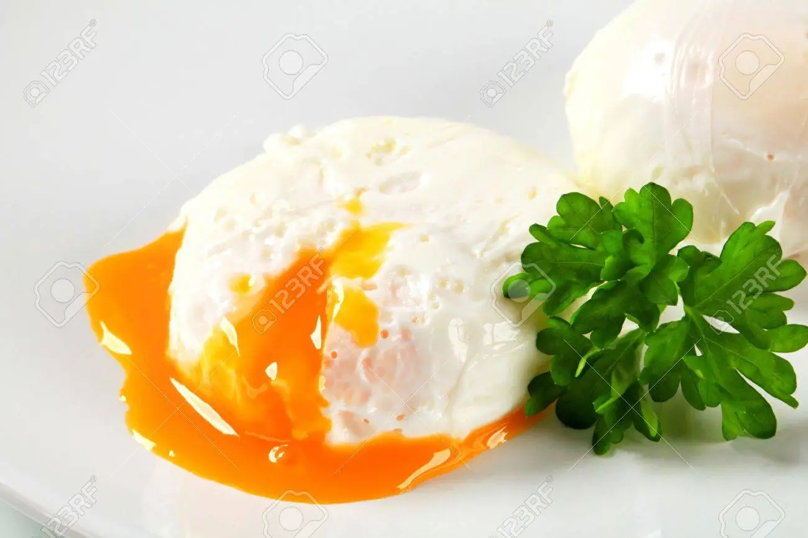

Poached Egg

Poached eggs are a wonderful addition to ramen or toast, and this method makes them very easy to cook.
Ingredients:
Steps:
- Place the clig wrap over a bowl or cup opening.
- Spray some oil on top of the cling wrap.
- Crack the egg into the cling wrap and twist the rest around it so it forms a ball.
- Place into boiling water for 4 minutes.
- Enjoy!